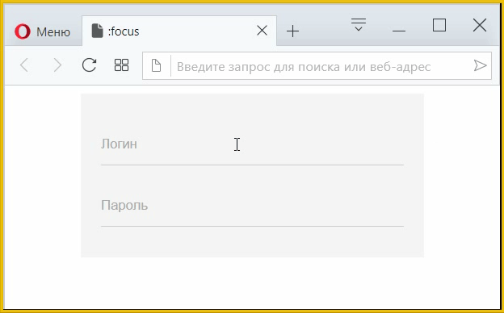

Подсказка в поле формы
Подсказки в полях формы помогают пользователю понять, какие данные ему надо вводить. Для <input> есть атрибут placeholder, он выводит в поле текст, который исчезает при наборе текста. С помощью псевдокласса :focus и псевдоэлемента ::placeholder можно изменить вид подсказки, чтобы при получении фокуса она сдвигалась вверх и уменьшалась (рис. 1).

Рис. 1. Изменение вида подсказки
Стиль подсказки устанавливается через селектор ::placeholder — зададим серый цвет текста с помощью свойства color и время трансформации через transition.
input::placeholder {
transition: 0.5s; /* Время трансформации */
color: #aaa; /* Цвет подсказки */
}Вид подсказки при получении полем фокуса устанавливается через селектор :focus::placeholder. В стилевых правилах зададим размер шрифта через свойство font-size и переместим подсказку через transform с функцией translateY. Отрицательное значение сдвинет подсказку вверх.
input:focus::placeholder {
font-size: 10px; /* Размер шрифта */
transform: translateY(-16px); /* Сдвигаем вверх */
}Остальной код нужен для красоты и приведён в примере 1.
Пример 1. Изменение подсказки при фокусе
<!DOCTYPE html>
<html>
<head>
<meta charset="utf-8">
<title>:focus</title>
<style>
form {
background: #f5f5f5; /* Цвет фона */
width: 300px; /* Ширина формы */
margin: auto; /* Выравниваем по центру */
padding: 20px; /* Поля вокруг текста */
}
input {
width: 100%; /* Ширина поля */
box-sizing: border-box; /* Ширина не учитывает padding */
margin: 10px 0; /* Отступы сверху и снизу */
padding: 12px 0; /* Поля вокруг текста */
border: none; /* Убираем рамку */
border-bottom: 1px solid #ccc; /* Линия снизу */
background: transparent; /* Прозрачный фон */
}
input:focus {
outline: none; /* Убираем контур */
border-bottom: 2px solid #1976D2; /* Синяя линия снизу */
}
input::placeholder {
transition: 0.5s; /* Время трансформации */
color: #aaa; /* Цвет подсказки */
}
input:focus::placeholder {
font-size: 10px; /* Размер шрифта */
transform: translateY(-16px); /* Сдвигаем вверх */
}
</style>
</head>
<body>
<form action="/example/handler.php">
<input type="text" name="login" placeholder="Логин">
<input type="password" name="pass" placeholder="Пароль">
</form>
</body>
</html>К сожалению, данный вариант не является универсальным и не работает желаемым образом в браузерах Internet Explorer и Firefox. Так что приведём альтернативное решение, когда подсказка выводится с помощью элемента <label>. Каждую строку заключим в <div> с классом row, а внутрь вставим <input> и <label>, связав их друг с другом через атрибуты id и for.
<div class="row">
<input type="text" name="login" id="login">
<label for="login">Логин</label>
</div>Стиль для <input> останется тем же, что и в примере 1, и добавится только стиль для <label>. Чтобы текст подсказки отображался поверх поля формы превращаем <label> в блочный элемент и смещаем его вверх через свойство transform с функцией translateY. Так же важно задать постоянный line-height, поскольку шрифт при фокусе будет уменьшаться, соответственно, уменьшаться и межстрочное расстояние, что приведёт к «скачкам» текста. Здесь же ставим и время трансформации подсказки.
.row label {
display: block; /* Блочный элемент */
color: #aaa; /* Цвет подсказки */
transform: translateY(-1.5rem); /* Сдвигаем вверх */
line-height: 1rem; /* Межстрочный интервал */
transition: 0.5s; /* Время трансформации */
}Для определения стиля подсказки при получении фокуса используем селектор input:focus+label. Но этого недостаточно, ведь если набрать в поле текст и убрать фокус, подсказка вернётся в своё исходное положение и будет отображаться поверх введённого текста. Нам надо сделать так, что если в поле содержится текст, то подсказка остаётся вверху. Для этого подключаем селектор input:valid+label, он задаёт стиль <label>, когда в <input> введён корректный текст.
.row input:focus + label,
.row input:valid + label {
font-size: 10px; /* Размер шрифта */
transform: translateY(-2.5rem); /* Сдвигаем вверх */
}Псевдокласс :valid работает для полей формы, когда в них вставлен атрибут required. Так что в коде HTML добавляем этот атрибут к <input>, как показано в примере 2.
Пример 2. Подсказка через <label>
<!DOCTYPE html>
<html>
<head>
<meta charset="utf-8">
<title>:focus</title>
<style>
form {
background: #f5f5f5; /* Цвет фона */
width: 300px; /* Ширина формы */
margin: auto; /* Выравниваем по центру */
padding: 20px; /* Поля вокруг текста */
}
.row input {
width: 100%; /* Ширина поля */
box-sizing: border-box; /* Ширина не учитывает padding */
padding: 0.5rem 0; /* Поля вокруг текста */
border: none; /* Убираем рамку */
border-bottom: 1px solid #ccc; /* Линия снизу */
background: transparent; /* Прозрачный фон */
}
.row input:focus {
outline: none; /* Убираем контур */
border-color: #1976D2; /* Синяя линия снизу */
}
.row label {
display: block; /* Блочный элемент */
color: #aaa; /* Цвет подсказки */
transform: translateY(-1.5rem); /* Сдвигаем вверх */
line-height: 1rem; /* Межстрочный интервал */
transition: 0.5s; /* Время трансформации */
}
.row input:focus + label,
.row input:valid + label {
font-size: 10px; /* Размер шрифта */
transform: translateY(-2.5rem); /* Сдвигаем вверх */
}
</style>
</head>
<body>
<form action="/example/handler.php">
<div class="row">
<input type="text" name="login" id="login" required>
<label for="login">Логин</label>
</div>
<div class="row">
<input type="password" name="pass" id="pass" required>
<label for="pass">Пароль</label>
</div>
</form>
</body>
</html>